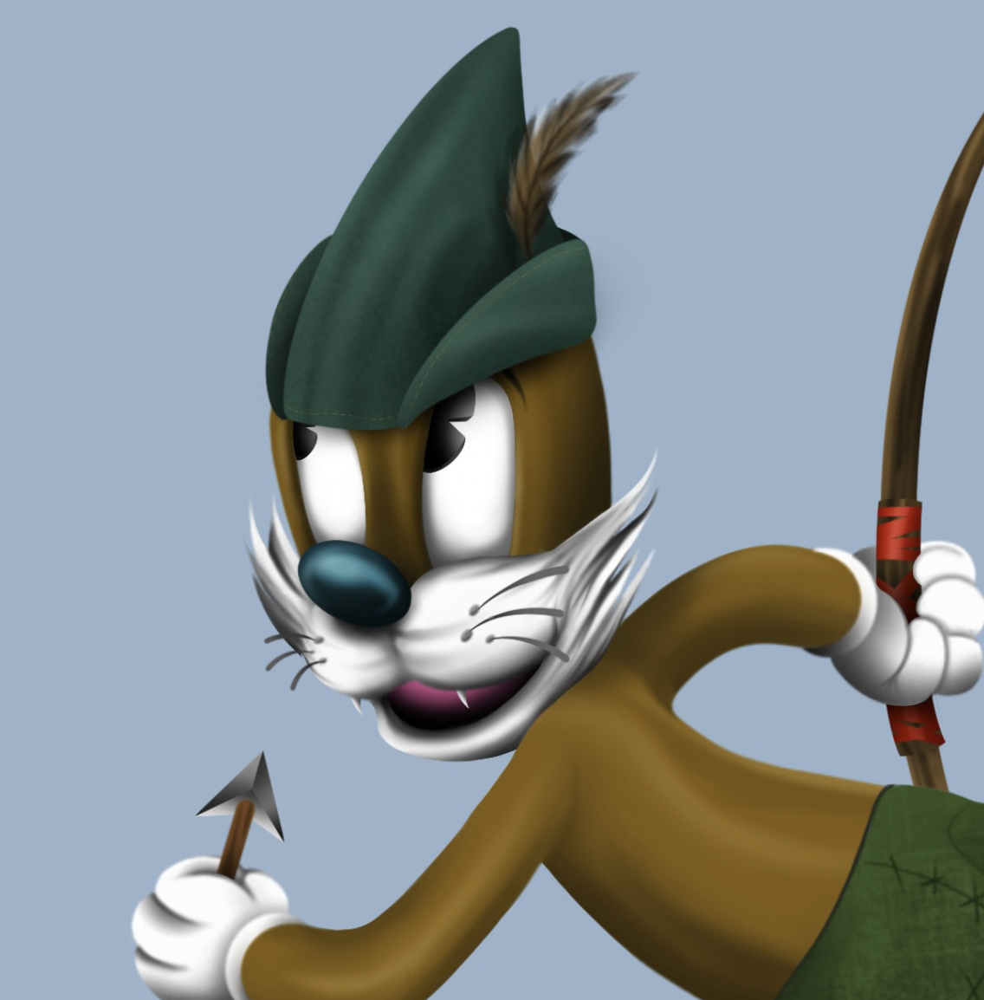
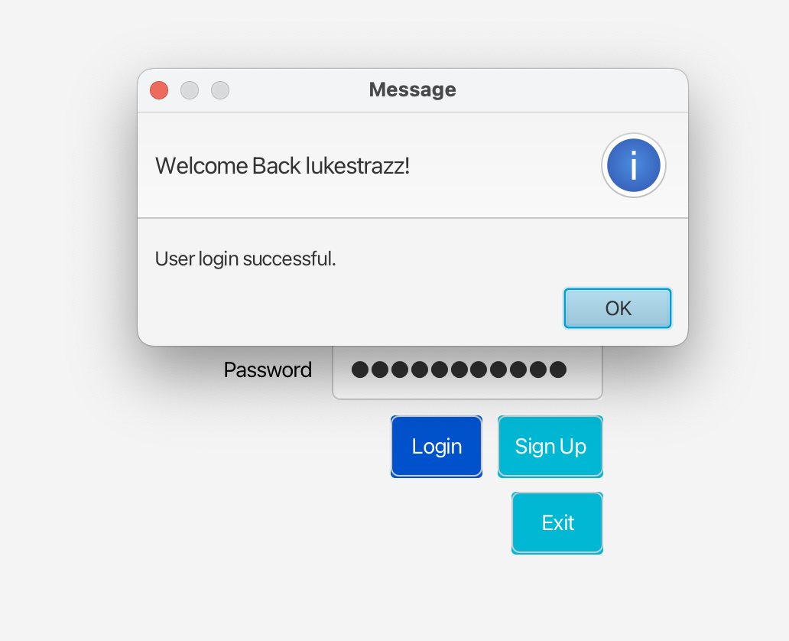
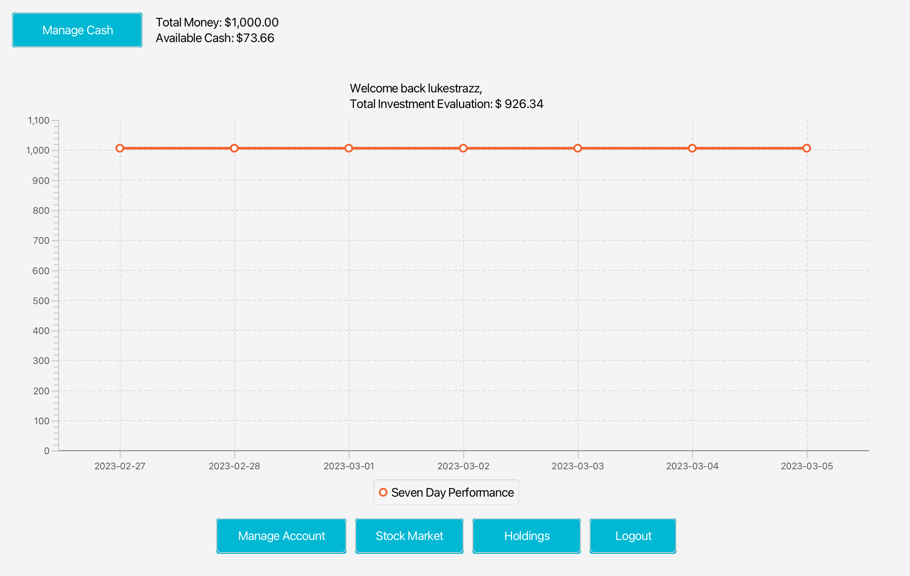
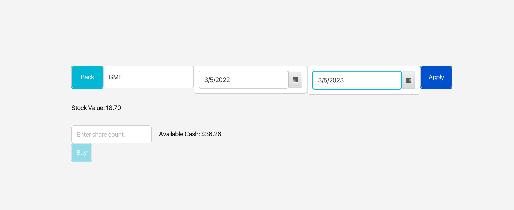
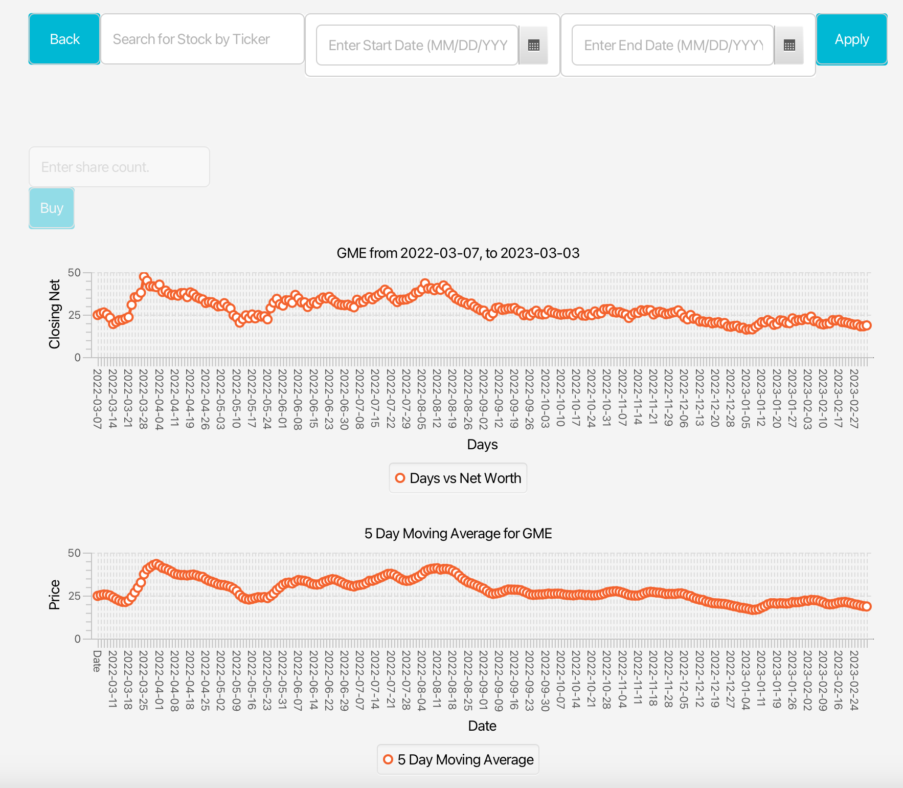

Welcome to my Portfolio
Here you can find all of my latest projects and information about me.
My Projects
-
My First Initiative, Strazz Tuned Buddy


Strazz Tuned Buddy was inpired from a Dasai Mochi, A simple case with a OLED screen and an Arduino Board. I saw I could make it, so learned how, and I did it.
-
My First Web3 Based Job
Toonverse Studios NFT


With my love of Web3, Blockchain and knowledge of Security measures, I started at Toonverse as a regular discord Moderator. Overtime, I showed them my uprising skillset and I have continued to increase the communities saftey, as well as bring an abundance of talent, stratedgy and overall worth to the project and NFT's value.
-
Project 3
King's Trading Stock Application


What started as a College Project, turned my eyes to the real power of coding. This is what I would consider to be my first project. You can create an account, login, depost/ withdrawl funds, buy stocks, and sell them. This app will also display an accurate chart, as well as hold all P/L for all purchases.


About Me:
Interested in Web3 and AI, Building and Marketing are hobbies, and strengths of mine.
Contact Me
You can reach me at my email address: lukestrazzera@gmail.com